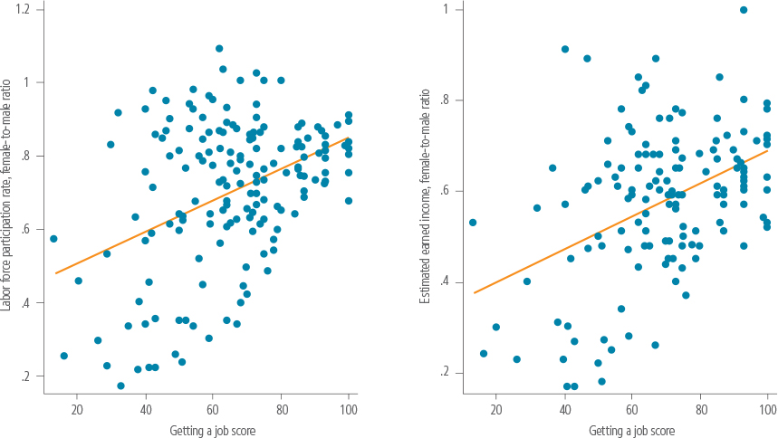

FIGURE 1.12 RESTRICTIONS ON WOMEN’S EMPLOYMENT EXIST IN ALL REGIONS

Source: Women, Business and the Law database.
Globally, over 2.7 billion women are legally restricted from having the same choice of jobs as men.
Women, Business and the Law 2018 is the fifth in a series of biennial reports measuring gender differences in legal treatment. Since this research started, the realization of the importance of women’s entrepreneurship and employment has increased significantly, as has our understanding of the relationship between legal gender equality and women’s economic outcomes.
While understanding that women’s access to employment and entrepreneurial activities is related to many factors, the data in this report illustrate how laws and regulations limit women’s economic participation.
Consider the case of a girl who grows up aspiring to be a ship’s captain. She excels at school in the hopes of getting her dream job. Maybe she is even hired to do it, but then she is fired simply because of her gender. What does this do to her aspirations and the aspirations of every girl who comes after?
Now consider the case of Svetlana Medvedeva, who studied navigation in college and graduated as a navigation officer in the Russian Federation. She applied to work as a ship’s helmsman and was selected. Later she was told she could not have that job as Regulation No. 162 lists helmsman as one of the 456 jobs deemed too arduous, harmful or dangerous for women.1
Medvedeva took the company to court based on the Russian Constitution’s equality provisions. Her case was dismissed because the court held that the purpose of the regulation was to protect women’s reproductive health. She appealed and her appeal was dismissed. She further appealed to the court of cassation. That appeal was also dismissed. She then brought her case to the United Nations Committee on the Elimination of Discrimination against Women. The Committee found that she had been discriminated against because of her gender.2
After this decision, and five years after her case began, Medvedeva once again went before a Russian district court. In September 2017 the court found that she had indeed been discriminated against. However the court did not order the company to hire her and the ban on women ship navigators is still in place.3
Meanwhile other economies are making progress on the issue of gender legal parity. In 2016 the Constitutional Court of Colombia struck down as discriminatory the labor code’s prohibitions on women’s work in mining and in jobs deemed hazardous and arduous.4 Bulgaria, Kiribati and Poland also eliminated all restrictions on women’s employment.
From the outset, the purpose of the Women, Business and the Law report has been to inform research and policy discussions on how laws and regulations influence women’s economic activity. This has largely occurred. From comprehending the importance of family law to women’s economic decision-making to recognizing the effect of violence against women on their employment opportunities, Women, Business and the Law has contributed to a better understanding of why legal gender equality matters.
But not enough has been done to reach legal gender equality. Many laws prevent women from working or running a business. For example, 104 economies still have laws preventing women from working in specific jobs, 59 economies have no laws on sexual harassment in the workplace, and in 18 economies, husbands can legally prevent their wives from working. What effect do laws like these have on women’s economic choices?
More research and evidence are needed to understand the effects of laws and regulations on women’s entrepreneurship and employment so that policymakers can better understand which policies to promote. Women, Business and the Law builds on a growing body of research that stresses the importance of laws in shaping women’s economic opportunities and improving gender equality. Research has called into question the notion that economic growth alone increases gender equality. Rather, continuous policy commitments to gender equality are required to achieve it.5
To understand where laws facilitate or hinder gender equality and women’s economic participation, Women, Business and the Law 2018 is providing scores for the first time for each of its seven indicators: accessing institutions, using property, getting a job, providing incentives to work, going to court, building credit and protecting women from violence. The indicator scores are a number between 0 and 100, with 100 being the best. The scores are obtained by calculating the unweighted average of the scored questions within that indicator, and scaling the result to 100.
The indicator scores facilitate research and policy discussions on how varying legal environments influence women’s economic opportunities and outcomes. The scored questions are based on two criteria: their relevance to women’s human rights as set out in the international women’s rights framework, including the Convention on the Elimination of all Forms of Discrimination Against Women (CEDAW), and research demonstrating their importance for women’s economic empowerment (table 1.1).
TABLE 1.1 WOMEN, BUSINESS AND THE LAW INDICATORS AND RELATED RESEARCH
Indicator |
Research |
Accessing institutions |
A 2000 reform of Ethiopia’s Family Code eliminated a husband’s ability to stop his wife from working, among other things. Although the reform has now been implemented throughout Ethiopia, it was first introduced in three regions and two cities. In these areas, women’s labor force participation and work outside the home increased. Women were also more likely to work full-time and in higher-skilled jobs.a Freedom of movement is a significant indicator of empowerment. It has been linked with women’s economic independence as well as their expanded voice and agency.b |
Using property |
The gender asset gap can undermine women’s bargaining power and capacity to engage in economic activities.c Giving women greater access to assets through inheritance can change outcomes for children, particularly girls. In 1994, two states in India reformed the Hindu Succession Act to allow women and men the same ability to inherit joint family property. This altered control over assets within families and increased parental investments in daughters. Mothers who benefited from the reform spent twice as much on their daughters’ education, and women were more likely to have bank accounts and sanitary latrines where the reform occurred. The reform has now taken place across India.d |
Getting a job |
Policies such as paid parental leave are associated with increases in women’s employment; however, extended durations of parental leave lead to reductions in women’s relative wages.e Meanwhile, restrictions on women’s work limit their ability to get the jobs they want and maximize their earning potential. Russia had a high gender earnings differential during its transition to a market economy, largely because of legal restrictions on the jobs women could perform.f Differences in wages and job tenure can largely explain the pension gap between women and men.g |
Providing incentives to work |
Support for mothers—such as tax credits and the availability of childcare for young children—can increase women’s participation in the labor force.h Evidence suggests that spending on early education and childcare can increase women’s labor force participation and reduce gender gaps.i |
Going to court |
Gender inequality can adversely affect women’s ability to use the legal system. Access to legal aid and other services can improve women’s access to justice.j Evidence shows that access to civil legal aid can reduce the need for social welfare programs, the time children spend in foster care and instances of domestic violence.k |
Building credit |
Prior to the passage of the 1974 Equal Credit Opportunity Act in the United States, banks often had explicit policies treating women differently from men. When the Act prohibited sex-based classifications and income discounting, the change seems to have had a dramatic effect on banking policies toward women. For example, the legislation had a favorable impact on women’s ability to obtain mortgage funds.l |
Protecting women from violence |
In economies where husbands can prohibit their wives from working or where there is a high prevalence of violence against women, women are less likely to have formal accounts, savings or credit.m Meanwhile, sexual harassment at work undermines authority, reinforces gender stereotypes, and reduces women to sexual objects. A study of women who experienced sexual harassment at work in a United States community found that sexual harassment increases financial stress and can significantly alter a woman’s career trajectory.n |
a Hallward-Driemeier and Gajigo 2013.
b Nagaraja 2013.
c Deere and Leόn 2003.
d Deininger et al. 2014.
e Ruhm 1998.
f Ogloblin 1999.
g Johnson 1999.
h Averett, Peters and Waldman 2006.
i Olivetti and Petrongolo 2017.
j Australia Law Reform Commission 1994.
k Abel and Vignola 2010.
l Ladd 1982.
m Demirguc-Kunt, Klapper and Singer 2013.
n McLaughlin, Uggen and Blackstone 2017.
Women’s international human rights, as set out in CEDAW, serve as the underlying justification for each scored question. For areas covering violence against women, reference to international treaty law has been supplemented by the UN Declaration on the Elimination of Violence against Women and the CEDAW Committee’s General Recommendations. Questions on maternity leave use the International Labour Organization’s Maternity Protection Convention of 2000 as a benchmark (figure 1.1).
FIGURE 1.1 WOMEN, BUSINESS AND THE LAW INDICATORS AND WOMEN’S PRINCIPAL CORRESPONDING HUMAN RIGHTS
Fifty questions are scored within the seven indicators (box 1.1). The scored questions fall into three categories: those with explicit gender-based differences affecting women’s entrepreneurship or employment (such as gender-based job restrictions), those reflecting the absence of laws protecting women (such as the lack of legislation on sexual harassment), and those examining institutions or processes that are likely to help women (such as anti-discrimination commissions). Details on the methodology and scoring of each question are available in the Data Notes chapter.
BOX 1.1 WOMEN, BUSINESS AND THE LAW SCORED QUESTIONS
Accessing institutions
1. Are married women required by law to obey their husbands?
2. Can a woman legally apply for a passport in the same way as a man?
3. Can a woman legally apply for a national ID card in the same way as a man?
4. Can a woman legally travel outside the country in the same way as a man?
5. Can a woman legally travel outside her home in the same way as a man?
6. Can a woman legally get a job or pursue a trade or profession in the same way as a man?
7. Can a woman legally sign a contract in the same way as a man?
8. Can a woman legally register a business in the same way as a man?
9. Can a woman legally open a bank account in the same way as a man?
10. Can a woman legally choose where to live in the same way as a man?
11. Can a woman legally be “head of household” or “head of family” in the same way as a man?
Using property
12. Who legally administers marital property?
13. Does the law provide for valuation of nonmonetary contributions?
14. Do men and women have equal ownership rights to immovable property?
15. Do sons and daughters have equal rights to inherit assets from their parents?
16. Do female and male surviving spouses have equal rights to inherit assets?
Getting a job
17. Is there paid leave available to women of at least 14 weeks?
18. Do women receive at least 2/3 of their wages for the first 14 weeks or the duration of the leave if it is shorter?
19. What is the percentage of maternity leave benefits paid by the government?
20. What is the difference between leave reserved for women and men relative to leave reserved for women, as a function of who pays?
21. Is there paid parental leave?
22. Does the law mandate equal remuneration for work of equal value?
23. Does the law mandate nondiscrimination based on gender in employment?
24. Is dismissal of pregnant workers prohibited?
25. Can parents work flexibly?
26. Can women work the same night hours as men?
27. Can women work in jobs deemed hazardous, arduous or morally inappropriate in the same way as men?
28. Are women able to work in the same industries as men?
29. Are women able to perform the same tasks at work as men?
30. Are the ages at which men and women can retire with full pension benefits equal?
31. Are the ages at which men and women can retire with partial pension benefits equal?
32. Are the mandatory retirement ages for men and women equal?
Providing incentives to work
33. Are mothers guaranteed an equivalent position after maternity leave?
34. Does the government support or provide childcare services?
35. Are payments for childcare tax deductible?
36. Is primary education free and compulsory?
37. Are there specific tax deductions or tax credits that are only applicable to men?
Going to court
38. Does a woman’s testimony carry the same evidentiary weight in court as a man’s?
39. Does the law establish an anti-discrimination commission?
40. Does the law mandate legal aid in civil and family matters?
41. Is there a small claims court or a fast-track procedure for small claims?
Building credit
42. Do retailers provide information to private credit bureaus or public credit registries?
43. Do utility companies provide information to private credit bureaus or public credit registries?
44. Does the law prohibit discrimination by creditors on the basis of sex or gender in access to credit?
45. Does the law prohibit discrimination by creditors on the basis of marital status in access to credit?
Protecting women from violence
46. Is there legislation specifically addressing domestic violence? If not, are there aggravated penalties for crimes committed against a spouse or family member?
47. Is there legislation on sexual harassment in employment?
48. Is there legislation on sexual harassment in education?
49. Are there criminal penalties for sexual harassment in employment?
50. Are there civil remedies for sexual harassment in employment?
This report covers data for 189 economies including 16 that were not covered in the previous report: Cabo Verde; the Central African Republic; the Comoros; Cyprus; Eritrea; The Gambia; Guinea-Bissau; Kiribati; Libya; the Marshall Islands; the Federated States of Micronesia; Palau; Samoa; San Marino; the Solomon Islands; and Vanuatu.
Women, Business and the Law 2018 also presents a case study on women’s financial inclusion and the law examining how legal and regulatory environments influence women’s demand for financial services.
The Women, Business and the Law indicators complement other gender indexes that are constructed using outcome variables and, in some cases, qualitative assessments (figure 1.2). Although Women, Business and the Law focuses on key legal and regulatory areas that are directly controlled by policymakers, there are many other factors that influence women’s economic opportunities—including educational levels and social and cultural norms—that are not captured.
FIGURE 1.2 OTHER GLOBAL GENDER INDEXES
Sources: World Economic Forum, OECD Development Center, and United Nations Development Program databases.
Other indexes take varying approaches to developing gender indicators and present different views of women’s societal position. Women, Business and the Law is one of the only global datasets that uses quantitative, objective data to measure legal gender gaps in policies. The “About Women, Business and the Law” chapter provides information on what is measured and what is not.
Women, Business and the Law scoring is correlated with the Global Gender Gap, Social Institutions and Gender, Gender Inequality and Gender-related Development indexes (figure 1.3). Showing that the policy variables measured by Women, Business and the Law are associated with outcomes tells us that the law influences what happens on the ground in areas such as empowerment, participation in the labor market and command over economic resources. As a result, one way to influence outcomes for women may be to reform laws and regulations that make it more difficult for women to participate in business and employment.
FIGURE 1.3 WOMEN, BUSINESS AND THE LAW SCORED INDICATORS ARE ASSOCIATED WITH OTHER GENDER INDEXES
Sources: Women, Business and the Law, World Economic Forum, OECD Development Center, and the United Nations Development Program databases.
Note: The WBL measure of gender legal equality is calculated as the average of the seven scored WBL indicators. Higher values mean greater gender equality in the Global Gender Gap Index (2016) and the Gender Development Index (2015); higher values mean worse gender equality in the Gender Inequality Index (2015) and the Social Institutions and Gender Index (2014).
Gender gaps in entrepreneurship are associated with decreased income and aggregate productivity. Research estimates that gender gaps cause an average income loss of 15% in OECD economies, 40% of which is due to entrepreneurship gaps. Losses are estimated to be significantly higher in developing countries.6 Additionally, legal gender differences are estimated to decrease female labor force participation and undermine GDP growth.7 Research estimates that for some economies, a large fraction of country differences in output per capita can be attributed to gender inequality, and many countries can increase output per capita by discouraging gender barriers in the labor market.8
The evidence indicates that laws can influence women’s economic participation. In the United States, for example, more women started getting patents in the 19th century after some states passed laws granting women property rights in their own name as well as granting the ability for women to act as sole traders and retain their own earnings.9 This same set of legal changes led to families investing more in their daughters’ secondary education.10
Equality of opportunity allows women to make the choices that are best for them, their families and their communities. However, equal opportunities in getting a job or starting a business do not exist where legal gender differences are prevalent. Legal restrictions constrain women’s ability to make economic decisions and can have far-reaching consequences. For example, women may decide not to work or start businesses in economies where the law makes it more difficult for them to do so (figure 1.4).
FIGURE 1.4 WITH LESS GENDER LEGAL EQUALITY IN AN ECONOMY, FEWER WOMEN WORK OR OWN BUSINESSES
Sources: Women, Business and the Law, Enterprise Surveys and World Development Indicators databases.
Note: The WBL measure of gender legal equality is calculated as the average of the seven scored WBL indicators. The positive relationships between the WBL measure of gender legal equality and the ratio of female-to-male labor force participation rate (2016), and the WBL measure of gender legal equality and the percentage of firms with majority female ownership are statistically significant at least at the 5% level after controlling for the log of GNI per capita (2015), the ratio of female-to-male years (mean) of education (age 25+) (2015), the proportion of seats held by women in national parliaments (2016), and the rule of law (2016). Sources for the control variables include the World Development Indicators and Barro-Lee Educational Attainment databases. Regression analyses are based on 164 and 93 economies for which data are available, respectively. These statistical relationships should not be interpreted as causal.
The seven indicator scores make it easier to identify economies in which women can participate in specific economic activity by region as well as to identify economies in which there is room for improvement. While no economy gets a perfect score in all 7 indicators, economies that score in the top 20 across each indicator include the United Kingdom, New Zealand and Spain.
OECD high-income economies tend to have the highest average scores across most indicators. Economies in the Middle East and North Africa tend to have the lowest average scores across most indicators (figure 1.5).
FIGURE 1.5 ON AVERAGE, OECD HIGH-INCOME ECONOMIES PERFORM BEST ACROSS MOST INDICATORS
Source: Women, Business and the Law database.
Over a third of the economies examined have at least one constraint on women’s legal capacity as measured by accessing institutions. Similarly close to 40% of economies have at least one constraint on women’s property rights as measured by the using property indicator.
Twenty-one economies from across 5 regions receive a score of 0 in the protecting women from violence indicator. In the Middle East and North Africa, 35% of the economies score 0 in this indicator, as do 19% of economies in Sub-Saharan Africa. Economies from other regions which score 0 include Haiti, the Federated States of Micronesia, Myanmar, Russia and Uzbekistan.
While the global average in getting a job is 67, South Asian economies have an average score of 39, the lowest across all regions.
For the building credit indicator, there is much room for improvement globally; 42% of economies score 0 on this indicator. Four regions—East Asia and the Pacific, the Middle East and North Africa, South Asia and Sub-Saharan Africa—each have an average score of 20 or below. The average score for low income economies is 8 (figure 1.6).
FIGURE 1.6 HIGH-INCOME ECONOMIES PERFORM BEST ACROSS INDICATORS
Source: Women, Business and the Law database.
Women, Business and the Law captured 87 changes toward legal gender equality across 65 economies, among the scored questions, over the last two years.
Of the five economies implementing the most reforms, four are in Sub-Saharan Africa: the Democratic Republic of Congo, Kenya, Tanzania and Zambia. One, Iraq, is in the Middle East and North Africa. Each of these economies reformed in three or more Women, Business and the Law indicators.
The Democratic Republic of Congo reformed its family code to allow married women to sign contracts, get jobs, open bank accounts and register businesses in the same way as married men. The economy also removed the obligation for a married woman to obey her husband and has allowed spouses to mutually choose the marital home. Additionally, the Democratic Republic of Congo lifted restrictions on women’s ability to work at night in public or private industrial establishments. Further, the economy also now mandates nondiscrimination based on gender in various aspects of employment including hiring and promotions. Finally, the Democratic Republic of Congo now prohibits gender discrimination by creditors in financial transactions.
Kenya has enacted its first domestic violence law, which protects family members, spouses, former spouses and partners from physical, sexual, psychological and economic abuse. Kenya also now provides legal aid in civil matters and has improved access to credit information by distributing data from two utility companies that report positive and negative payment information.
Tanzania made primary education both free and compulsory and its new Legal Aid Act allows for legal aid in civil proceedings. Additionality, Tanzania improved access to credit information by distributing data from retailers.
Zambia’s Gender Equity and Equality Act now prohibits gender discrimination in various aspects of employment and mandates equal remuneration for work of equal value. Zambia also established the Gender Equality Commission and prohibits discrimination based on gender and marital status in access to credit. Finally, Zambia established civil remedies for sexual harassment in employment.
Iraq enacted a new law that introduced electronic passports. The application process is now the same for men and women and no longer requires women to bring a guardian. Iraq also criminalized sexual harassment in employment. Iraq now guarantees workers returning from maternity leave the same position or a similar position with the same wage. Iraq also increased the length of paid maternity leave from 72 to 98 days. The country’s new labor code now prohibits discrimination based on gender in various aspects of employment including hiring and dismissal. However, the labor code also allows employers to terminate employees’ contracts when they reach the retirement age, which is unequal for men and women.
While Sub-Saharan Africa had the most reforms, South Asia had the highest percentage of reforming economies. Half of the economies in South Asia had at least one reform followed by Sub-Saharan Africa (45%), Europe and Central Asia (44%), and East Asia and the Pacific (40%) (figure 1.7).
FIGURE 1.7 SOUTH ASIA HAS THE HIGHEST PERCENTAGE OF ECONOMIES THAT IMPROVED
Source: Women, Business and the Law database.
The lowest percentage of reforming economies are OECD high-income economies (16%). However OECD high-income economies also have the best average scores across indicators.
The indicator with the most reforms was getting a job (28 economies) followed by building credit (24 economies). The least movement occurred in using property with only Ecuador demonstrating positive reform (figure 1.8). However, reforms affecting property are the slowest to occur. The chapter on Reform Summaries provides a description of all reforms.
FIGURE 1.8 THE MOST IMPROVEMENTS OCCURRED IN GETTING A JOB
Source: Women, Business and the Law database.
The following sections provide an overview of the main results by indicator.
The ability to make effective choices and transform them into economic outcomes is dependent on a supportive regulatory framework. Women, Business and the Law’s accessing institutions indicator examines laws governing women’s interactions with public authorities and the private sector to determine where women’s agency and economic activities may be limited. There are several spheres in which women may face constraints on their legal capacity to act or ability to conduct transactions.
For example, limitations on married women’s legal capacity, including the ability to work without their husbands’ permission, weakens decision-making ability. Additionally, when women cannot independently decide where they want to go, travel or live, they may face difficulty getting to work or conducting business transactions. Such restrictions may stem from women’s role in traditional societies, which was often limited by a fathers’ or husbands’ guardianship.
Today, this trend has largely been reversed among former colonial powers. In 1938 and 1975 respectively, France and Spain recognized a married woman’s ability to contract in her own name. Many of their former colonies, however, continue to use old legal codes and have not adopted similar reforms.
In economies such as Equatorial Guinea, for instance, the 1960 Spanish Civil Code is still in force. Equatorial Guinea is now the only economy examined where a woman needs her husband’s permission to sign a contract. Similarly, Chad, Guinea-Bissau and Niger still rely on colonial versions of civil laws that do not allow married women to open bank accounts without their husbands’ permissions.
Constraints on women’s agency and freedom of movement also persist (table 1.2). For example, in 18 economies women cannot get a job or pursue a trade or profession without permission. An exception to this is the Democratic Republic of Congo, which recently reformed a family code that was introduced by Belgium and adopted from the Code Napoléon. The reform allows married women to sign contracts, open bank accounts, register businesses, and get jobs without written permission from their husbands.
TABLE 1.2 OVER ONE-THIRD OF ECONOMIES STILL RESTRICT WOMEN’S AGENCY AND FREEDOM OF MOVEMENT
Action that women cannot legally perform in the same way as men |
Economies |
Number of economies |
Apply for a passport |
Afghanistan; Algeria; Bahrain; Barbados; Belize; Benin; Botswana; Cameroon; Congo, Rep.; Cyprus; Dominica; Egypt, Arab Rep.; Fiji; Gabon; Grenada; Guyana; Haiti; Iran, Islamic Rep.; Jordan; Malawi; Mali; Myanmar; Nigeria; Oman; Pakistan; Philippines; Samoa; Saudi Arabia; Seychelles; Solomon Islands; St. Vincent and the Grenadines; Sudan; Trinidad and Tobago; Uganda; United Arab Emirates; Yemen, Rep.; Zambia |
37 |
Choose where to live |
Afghanistan; Bahrain; Benin; Brunei Darussalam; Burkina Faso; Cameroon; Central African Republic; Chad; Comoros; Congo, Rep.; Equatorial Guinea; Gabon; Guinea; Guinea-Bissau; Haiti; Iran, Islamic Rep.; Iraq; Jordan; Kuwait; Malaysia; Mali; Niger; Oman; Qatar; Saudi Arabia; Senegal; Sudan; Syrian Arab Republic; United Arab Emirates; West Bank and Gaza; Yemen, Rep. |
31 |
Be head of household |
Bahrain; Burundi; Cameroon; Central African Republic; Chad; Chile; Comoros; Congo, Dem. Rep.; Congo, Rep.; Djibouti; Gabon; Guinea; Guinea-Bissau; Indonesia; Iran, Islamic Rep.; Iraq; Jordan; Libya; Madagascar; Mali; Mauritania; Morocco; Niger; Oman; San Marino; Saudi Arabia; Senegal; Sudan; Tunisia; United Arab Emirates; Yemen, Rep. |
31 |
Get a job without permission |
Bahrain; Cameroon; Chad; Comoros; Gabon; Guinea; Guinea-Bissau; Iran, Islamic Rep.; Jordan; Kuwait; Mauritania; Niger; Qatar; Sudan; Syrian Arab Republic; United Arab Emirates; West Bank and Gaza; Yemen, Rep. |
18 |
Travel outside the home |
Afghanistan; Bahrain; Brunei Darussalam; Egypt, Arab Rep.; Iran, Islamic Rep.; Iraq; Jordan; Kuwait; Malaysia; Oman; Qatar; Saudi Arabia; Sudan; Syrian Arab Republic; United Arab Emirates; West Bank and Gaza; Yemen, Rep. |
17 |
Apply for a national identity card |
Afghanistan; Algeria; Benin; Cameroon; Congo, Rep.; Egypt, Arab Rep.; Mauritius; Namibia; Oman; Pakistan; Saudi Arabia |
11 |
Travel outside the country |
Iran, Islamic Rep.; Iraq; Qatar; Saudi Arabia; Sudan; Syrian Arab Republic |
6 |
Register a business |
Bhutan; Guinea-Bissau; Pakistan; Suriname |
4 |
Open a bank account |
Chad; Guinea-Bissau; Niger |
3 |
Sign a contract |
Equatorial Guinea |
1 |
Source: Women, Business and the Law database.
Reforms increasing women’s access to institutions may contribute to women holding greater positions of authority. Women, Business and the Law analysis shows that women are more likely to hold leadership positions in public life when they have increased legal decision-making abilities (figure 1.9).
FIGURE 1.9 WOMEN ARE MORE LIKELY TO HOLD LEADERSHIP POSITIONS IN PUBLIC LIFE WHEN THEY HAVE GREATER DECISION-MAKING ABILITY
Sources: Women, Business and the Law and World Development Indicators databases.
Note: The difference in the percentages illustrated is statistically significant at the 1% level after controlling for the log of GNI per capita (2015), the ratio of female-to-male (mean) years of education (age 25+) (2015), and the rule of law (2016). Sources for the control variables include the World Development Indicators and Barro-Lee Educational Attainment databases. Regression analysis is based on 172 economies for which data are available. This statistical relationship should not be interpreted as causal.
Strong property rights can allow women to leverage assets for economic gain. The using property indicator examines women’s ability to acquire, access, manage and control property as a function of inheritance and marital property regimes. Access to property through these means can both increase women’s financial security and provide them with the necessary collateral to start businesses.
Women, Business and the Law finds that women’s property rights are positively associated with their leadership positions in the private sector. Women are less likely to have leadership positions in business in economies where their property rights are constrained (figure 1.10).
FIGURE 1.10 WOMEN ARE LESS LIKELY TO HOLD LEADERSHIP POSITIONS IN BUSINESS WHEN THEY LACK PROPERTY RIGHTS
Sources: Women, Business and the Law and Enterprise Surveys databases.
Note: The difference in the percentages illustrated is statistically significant at the 10% level after controlling for the log of GNI per capita (2015), the ratio of female-to-male (mean) years of education (age 25+) (2015), the proportion of seats held by women in national parliaments (2016), and the rule of law (2016). Sources for the control variables include the World Development Indicators and Barro-Lee Educational Attainment databases. Regression analysis is based on 121 economies for which data are available. This statistical relationship should not be interpreted as causal.
Systems of property ownership for spouses provide for the management of marital estates during and after marriage. In most economies this system is set by default. Called a marital property regime, it determines the allocation of assets between spouses and automatically applies to spouses that do not opt out.
Of the marital property regimes covered by Women, Business and the Law, the most common are separate property and community property. While separate property regimes allow each spouse to retain ownership and control over their own property with full administrative rights, community property regimes treat the property of either spouse as joint property regardless of who paid for it.
Studies arising from the Gender Asset Gap Project emphasize the importance of certain property regimes for women’s property rights. For example, a comparative study of Ecuador, Ghana and the Indian state of Karnataka found that in separate property regimes, gender gaps in assets and wealth tend to be larger. In contrast, these asset and wealth gaps are smaller under community property regimes. The results show that in Ghana and Karnataka, women constitute just 38% and 20% of landowners, respectively. Both economies have a default separation of property regime. However, in Ecuador, where the default marital regime is community of property, women make up 51% of agricultural landowners.
Having strong property rights, including through marital property regimes, is a critical component of land ownership. Control of land or housing can provide direct economic benefits to women entrepreneurs (box 1.2).
Box 1.2 JOINT TITLING AND LAND REGISTRATION HELP EMPOWER WOMEN
Strong property rights and titling schemes encourage asset-based lending, or loans secured by collateral. Having titled property is particularly important for women in low-income economies, where entrepreneurship offers a chance to overcome poverty. Titled property provides proof of ownership, which facilitates its use as collateral. Government policies promoting joint titling, in which more than one person has ownership rights, can expand the pool of property women can use as collateral for bank financing. For some women, this may mean the chance to access credit and start a business.
Women, Business and the Law finds that some economies legally establish joint titling for married couples through marital property regimes or land laws. For example, Lesotho’s Land Act establishes that property titles are held jointly for spouses whose marital regime is community property. In the Philippines, every title certificate belonging to a married couple is in the name of both spouses, as mandated by Presidential Decree 1529. Vietnam’s Land Law also establishes joint titling when land use rights and houses are joint property. Some other economies with joint titling include Albania; Brazil; Bulgaria; Burkina Faso; Kosovo; Lithuania; the former Yugoslav Republic of Macedonia; Namibia; Paraguay; Rwanda; Slovenia; South Africa and Spain.
Additionally, some economies have introduced innovative laws to further promote women’s land registration. For example, Nepal’s 2017 Finance Act has discounted fees to register property jointly by spouses or under a woman’s name. Serbia applies similar discounts. Finally, rural women and women heads of household in Colombia have preferential access to rural land formalization programs through Decree No. 902.
Sources: De Soto 2001; Giovarelli and Girma 2013; Ali, Deininger and Goldstein 2014.
Because women are more likely to perform unpaid activities that benefit the household such as child or elder care, they typically have fewer monetized contributions than men and therefore acquire fewer assets during marriage. Recognition of these nonmonetary contributions is important upon the dissolution of marriage as it can grant women access to a share of marital property. Though these contributions are implicitly recognized in community property regimes, separate property regimes can penalize a spouse that does not earn an income during marriage. This income penalty can be mitigated in divorce by explicitly recognizing nonmonetary contributions to a household.
Of the 189 economies examined by Women, Business and the Law, 134 recognize nonmonetary contributions. These economies include all with default community property regimes and 28 of the 75 economies with separate property regimes.
Another reason for gaps between women’s and men’s ownership of assets may be inheritance rights. Often inheritance offers an opportunity for both men and women to own land or housing. For widows inheritance may be the only way to acquire ownership over assets and can be a crucial component of economic security after the death of a spouse. However, in 36 of the 189 economies covered, widows are not granted the same inheritance rights as widowers. Further, 39 economies prevent daughters from inheriting the same proportion of assets as sons. Differences such as these can limit a woman’s economic prospects during a vulnerable phase of life.
The getting a job indicator examines laws and regulations affecting the millions of women working in formal employment globally. Starting from when a woman applies for a job through to when she retires, this indicator explores the policies that affect a woman’s ability to work including her job prospects, earning potential, career growth and ability to balance work and family.
In the economies that score well under the getting a job indicator, more women tend to work relative to men. In these economies women also earn more money relative to men which demonstrates that labor market laws can both encourage women to enter the formal labor force and increase their earning potential (figure 1.11).
FIGURE 1.11 GENDER EQUALITY IN LABOR LAW is associated with MORE WOMEN WORKING AND EARNING MORE RELATIVE TO MEN

Sources: Women, Business and the Law and World Development Indicators databases; World Economic Forum Global Gender Gap Report 2016 (Table C3, p.47).
Note: The positive relationships between the getting a job score and the ratio of female-to-male labor force participation rate (2016), and the getting a job score and the ratio of female-to-male estimated earned income (2016) are statistically significant at the 1% level after controlling for the log of GNI per capita (2015), the ratio of female-to-male years (mean) of education (age 25+) (2015), the proportion of seats held by women in national parliaments (2016), and the rule of law (2016). Sources for the control variables include the World Development Indicators and Barro-Lee Educational Attainment databases. Regression analyses are based on 164 and 138 economies for which data are available, respectively. These statistical relationships should not be interpreted as causal.
Economies grow faster when more women work.11 Although current good practice calls for gender equality in work opportunities, this has not always been the case historically. For example, the ILO’s Underground Work (Women) Convention of 1935 and its 1919, 1934 and 1948 conventions on women’s night work called on states to prohibit women’s employment in underground mines and night work in industrial undertakings. Similarly, in the years following the Industrial Revolution, several economies banned women from certain jobs to protect them from unsafe working conditions (box 1.3).
Box 1.3 THE LASTING EFFECTS OF LEGACY LEGISLATION
Certain job restrictions are largely due to legacy legislation reflecting outdated safety standards. Restrictions on women’s work in mining in many Commonwealth economies, for example, can be traced back to the United Kingdom’s Mines and Collieries Act of 1842. Currently, almost half of Commonwealth economies place limits on the jobs women can do. In the Commonwealth of Independent States (CIS), most economies have a lengthy list of job restrictions for women, a remnant of a 1932 Soviet Union Law. Of the nine CIS economies covered, only Armenia does not have such restrictions. Similar trends exist in Francophone Africa, Lusophone Africa and the Spanish-speaking world.
Seventy-five percent of economies in Francophone Africa have regulations restricting women’s employment, with many mirroring a 1954 ordinance from the former federation of French West Africa. Among these economies are Benin, Burkina Faso, Cameroon, the Central African Republic, Chad, the Democratic Republic of Congo, the Republic of Congo, Côte d’Ivoire, Gabon, Guinea, Madagascar, Mali, Mauritania, Niger and Senegal.
Portuguese and Spanish legacy legislation has also left a mark in many former colonies. Portugal first introduced a series of decrees restricting women’s work in the 1890s. These decrees were not fully repealed until the early 2000s. Currently, almost every country in Lusophone Africa and Brazil has at least one restriction on women’s work. Spain enacted a decree in 1957 prohibiting women from a variety of jobs, including in mining, certain construction jobs and electricity. This decree was repealed only in 1995. Currently, 12 economies in the Spanish-speaking world place legal restrictions on women’s work: Argentina, Bolivia, Chile, Colombia, Costa Rica, Ecuador, Equatorial Guinea, Guatemala, Honduras, Nicaragua, Panama and Uruguay.
Though conditions have improved for both men and women over time, many gender-based restrictions remain. Industry restrictions, such as those on mining, are particularly common. Sixty-five economies restrict women from working in mining. Women also face job restrictions in industries such as manufacturing (47 economies), construction (37 economies), energy (29 economies), agriculture (27 economies), water (26 economies) and transportation (21 economies).
Additionally, in 29 of the 189 economies covered, women cannot work the same night hours as men. Night work restrictions exist in every region except in OECD high-income economies. The restrictions are most common in South Asia and the Middle East and North Africa, where women cannot work the same night hours as men in 63% and 55% of economies, respectively. In total 104 economies continue to place restrictions on women’s employment (figure 1.12). Research estimates that eliminating barriers that prevent women from working in certain sectors or occupations could increase labor productivity by as much as 25% in some economies simply by increasing women’s labor force participation.12
FIGURE 1.12 RESTRICTIONS ON WOMEN’S EMPLOYMENT EXIST IN ALL REGIONS
Source: Women, Business and the Law database.
Workplace protections, however, can facilitate women’s ability to secure and sustain employment. For example legal protections such as gender-based nondiscrimination in employment can encourage the entry of women into the workforce. Similarly guaranteeing equal remuneration for work of equal value can ensure that women are not discriminated against when receiving wages and benefits.
Although almost 80% of the studied economies prohibit gender discrimination in employment, only 40% mandate equal remuneration for work of equal value. This standard originates from the ILO’s Equal Remuneration Convention and provides a broader framework than equal pay for equal work as it allows a comparison between not only the same or similar jobs, but also between different jobs of equal value.
Most OECD high-income economies and economies in Europe and Central Asia mandate equal remuneration for work of equal value. Forty percent of the economies in Sub-Saharan Africa also do so, while only 25% or fewer of the economies in Latin America and the Caribbean, the Middle East and North Africa, East Asia and the Pacific and South Asia mandate equal remuneration.
The regulatory environment also plays a significant role in shaping women’s ability to both get jobs and remain in the labor force after starting a family. Maternity, paternity and parental leave schemes can help recognize and redistribute unpaid care work. Ensuring job-protected leave of adequate length and pay for both parents is critical for a variety of health, economic and social development outcomes. The International Labour Organization’s (ILO) 2000 Maternity Protection Convention establishes a minimum of 98 days (14 weeks) of paid maternity leave. Wage replacement is set at a minimum of 67% (2/3) of earnings ideally provided through compulsory social insurance or public funds.
Globally the median length of paid maternity leave matches the ILO standard of 14 weeks with corresponding wage replacement varying from 25% to 100% of earnings. Only 7 economies have no paid leave available to mothers. These economies include the Marshall Islands, the Federated States of Micronesia, Palau, Papua New Guinea, Suriname, Tonga and the United States.
The cost of hiring women of childbearing age is higher for employers in economies in which laws mandate that employers pay for leave benefits and in which the length of leave available to mothers significantly exceeds the length of leave available to fathers. The median length of paid paternity leave is only 5 days in the 91 economies that mandate it meaning maternity leave is a full 93 days longer on average.
In India, for example, employers may view the recent increase of maternity leave from 84 to 182 days as a disincentive to hiring women because employers bear the full cost. Employers have no legal obligation to provide paid paternity leave. The disparity between the cost of hiring women compared to men may also lead employers to reduce women’s salaries to compensate for paying women higher leave benefits.
However if the cost of maternity leave is paid for by the government, firms do not necessarily face higher costs for hiring women. Governments pay 100% of leave benefits for mothers in 96 economies. In 53 economies employers pay 100% of leave benefits. In 27 economies, governments pay 50% or more of such benefits.
Some economies are shifting away from maternity and paternity leave in favor of parental leave. For example, in 2015 the United Kingdom reformed its leave policies so that 37 weeks of paid maternity leave may be taken as shared, paid parental leave. Of the 42 economies with paid parental leave, almost 90% provide it in addition to maternity leave. Paid parental leave is most commonly found in high and upper-middle-income economies.
Parental leave is normally available to both parents. However, women tend to use it more than men. Although longer and higher paid leave for mothers has significant benefits, too much time out of the labor force may negatively affect a woman’s career progression and earnings.13 The key to designing leave policies that do not exacerbate gender inequality may be in promoting fathers’ uptake of leave (table 1.3).
TABLE 1.3 POLICIES TO PROMOTE FATHERS’ UPTAKE OF PARENTAL LEAVE
Economy |
Examples |
Austria |
Parents each receive an additional bonus cash payment if they share their leave equally or at least 60:40. |
France |
Parents receive higher payments if they both take some leave. |
Italy |
Parents receive an additional month of leave if the father takes at least 3 of the initial 10 months. |
Germany |
Parents receive pay for an additional 2 months of leave if they each take at least 2 of the initial 12 months. |
Japan |
Parents receive an additional 2 months of paid leave if they share the initial 12 months. |
Korea, Rep. |
The second parent to take parental leave (typically the father) receives 100% of his wages up to a ceiling for 3 months. The first parent receives 40%. |
Norway |
Seventy days of the total postnatal parental leave period are reserved for each parent. |
Portugal |
Parents who share the initial 120 days of parental leave receive an additional 30 days. |
Romania |
The parent who did not initially request parental leave (typically the father) is obliged to take 1 of the 24 months of leave. |
Sweden |
Ninety of the 480 days of paid parental leave are reserved for each parent. |
Source: Women, Business and the Law database.
A recent report examining more than 100 leading studies related to infant and child health and well-being, maternal health, gender equality and economic impact concluded that the optimal length of paid leave to ensure optimal infant and child health and well-being is one year split equally between parents.14
When maternity, paternity and parental leave end, working parents continue to have family responsibilities that may affect their jobs. Laws that promote flexible work arrangements can reduce work-family conflicts. Moreover the ability to work reduced hours, to work variable hours (flextime), to telework or to have working-time autonomy can benefit both businesses and employees by reducing operational costs and turnover expenses and by improving productivity and work-life balance.15 Of the economies covered by Women, Business and the Law, just 33 economies explicitly grant parents the right to request or obtain flexible work arrangements by law.
When it comes to leaving the workforce, statutory retirement ages set career expectations and durations for working men and women. Laws that establish earlier retirement ages for women can negatively affect their lifetime earnings, pension benefits and retirement savings as well as their career growth prospects. When women are required to retire at an earlier age than men, they end their working lives with fewer years of employment. Conversely, if women enjoy the same statutory retirement age as men, years of employment are equalized and labor force participation can be encouraged.
Gender-differentiated retirement ages exist in every region of the world with the highest percentages in economies in the Middle East and North Africa (58%) and Europe and Central Asia (40%). Retirement is mandatory in almost a quarter of economies with gender-differentiated retirement ages.
In 41 of the 189 economies measured, women can retire with full benefits 1 to 10 years earlier than men. Most economies with gender-differentiated retirement ages have a 5-year gap between women’s and men’s retirement ages. The largest gap is in China where women can retire at age 50, 10 years before men.
In 13 economies laws allow women to retire with partial benefits earlier than men. These economies include Albania, Algeria, Bahrain, Brazil, Bulgaria, Costa Rica, the Islamic Republic of Iran, the Kyrgyz Republic, Pakistan, Panama, Switzerland, the United Arab Emirates and the Republic of Yemen. In economies with such differences, women may forgo promotions and raises through early retirement. Women also contribute less to their pensions and savings in these circumstances, which can lead to financial hardship in retirement.16
Governments can also facilitate balancing work and family by supporting and incentivizing mothers’ ability to return to the workforce after childbirth. Income tax regulations and support for age-appropriate childcare and education can affect a woman’s decision to enter and remain in the workforce. The providing incentives to work indicator analyzes such benefits and the ways in which they can influence women’s decisions to work.
The ease, cost and availability of care for young children can affect whether a mother works outside the home. Because women are often the primary caregivers for children, public assistance for childcare can create opportunities for women to enter the workforce. For example one study found that among OECD economies the availability of public childcare for children below the age of 5 years is strongly correlated with employment rates of mothers with young children.17
Over two-thirds of the economies covered by Women, Business and the Law directly provide childcare services or subsidize private childcare services. In Finland, for instance, municipal early childhood education is available from when the maternity and parental allowance periods finish until the child goes to primary school. As an alternative parents can choose to use private day care centers whose fees will be covered by the Social Insurance Institution through the Private Daycare Allowance. In other economies such as Ghana, Brazil and Costa Rica, preschool is free and compulsory starting at age four. Policies such as these can make childcare more affordable and enable parents to work.
Personal income tax deductions for childcare fees can also reduce the burden of childcare costs for parents. Though less common than publicly provided or subsidized childcare, this type of tax deduction can influence a parent’s decision to return to or enter the workforce.
In 33 of the economies covered childcare payments are tax deductible. All the economies that provide for tax deductible childcare payments are upper-middle and high-income, except Bhutan and El Salvador. Bhutan is also the only economy in South Asia to provide this incentive, and only one economy in the Middle East and North Africa region—Malta—provides the benefit.
Women, Business and the Law finds that the enrollment of children in preprimary education is higher in economies that provide deductions for childcare fees than in economies without such deductions (figure 1.13).
FIGURE 1.13 ENROLLMENT IN PREPRIMARY SCHOOL IS HIGHER WHERE CHILDCARE FEES ARE TAX DEDUCTIBLE

Sources: Women, Business and the Law and World Development Indicators databases.
Note: The difference in the percentages illustrated is statistically significant at the 10% level after controlling for the log of GNI per capita (2015), the proportion of seats held by women in national parliaments (2016), and the rule of law (2016). Source for the control variables is the World Development Indicators database. Regression analysis is based on 127 economies for which data are available. This statistical relationship should not be interpreted as causal.
A woman’s decision to participate in formal employment may be affected in economies where there are gender differences in personal income tax regulations. Some economies grant tax deductions or credits to male taxpayers by default, reducing their taxable income and increasing take home pay. In some cases, this may mean that women pay disproportionately higher taxes than men. Without access to the same deductions or credits, women end up paying more in taxes which reduces their take home pay and provides a disincentive to entering the formal labor market.
Of the 189 economies covered, 15—Benin, Brunei Darussalam, Burkina Faso, the Democratic Republic of Congo, the Republic of Congo, Guinea, Indonesia, Iraq, the Lao People’s Democratic Republic, Libya, Malaysia, Morocco, the Philippines, Togo and Tunisia—grant tax deductions or credits to male taxpayers by default.
In Guinea for example, a male taxpayer is entitled to a deduction for each dependent child and each wife. Minor children of married taxpayers are considered dependents of the husband. The wife receives tax benefits only if the husband is absent or incapacitated. In Iraq women receive tax deductions only if they are unmarried, divorced or widowed. In Malaysia a male taxpayer receives tax deductions for his dependent wife.
In limited circumstances women may be able to receive the same deductions or credits that men receive, but not by default. For example in cases of joint filing in Togo, tax credits for dependents are provided to the male head of household. The wife can also receive this head of household tax credit, but only if specific criteria are met.
Similarly, in Tunisia the male head of household receives tax deductions for dependent parents and children. The wife can receive these same deductions if she is considered the head of household. However this happens only if the husband has no income or if the wife remarries and has custody of the children.
By strengthening the rule of law and narrowing inequality, access to justice allows people to use the legal system to advocate for their interests and ensures enforcement of the law. The going to court indicator assesses women’s access to justice by examining justice institutions and procedures enhancing access to the legal system.
Unequal treatment in court can undermine women’s legal capacities. The provision of testimony plays a key role in the outcome of any case and is a witness’s opportunity to present an accurate rendering of facts. Testimony can affect the distribution of resources among women and men particularly in cases where economic rights are at issue.
Women, Business and the Law examines where women’s testimony does not carry the same evidentiary weight in court as men’s. In 16 economies the law differentiates between the evidentiary value of women’s and men’s testimony. Twelve of these economies are in the Middle East and North Africa (Bahrain, the Islamic Republic of Iran, Iraq, Jordan, Kuwait, Libya, Oman, Qatar, Saudi Arabia, the Syrian Arab Republic, West Bank and Gaza and the Republic of Yemen), two are in Sub-Saharan Africa (Mauritania and Sudan), one is in East Asia and the Pacific (Brunei Darussalam) and one is in South Asia (Pakistan).
Institutions that are not courts can also play an important role in ensuring women’s access to justice. Anti-discrimination commissions are independent from the justice system and responsible for protecting, monitoring and promoting fundamental rights. Women, Business and the Law examines anti-discrimination commissions that are mandated to receive complaints of gender discrimination by both public and private actors.
Commissions can advise governments on policy issues such as occupational segregation, the gender wage gap and women’s labor force participation. For example New Zealand’s Human Rights Commission examined equal employment opportunities in the female-dominated elderly care sector. Based on its recommendations regarding pay, working conditions and workforce training, the Employment Court found that a care workers’ low pay was a breach of the Equal Pay Act.18
Of the 189 economies covered by Women, Business and the Law, 93 have established commissions that receive complaints from victims of gender discrimination (map 1.1). Europe and Central Asia has the highest percentage of economies with such institutions at 72%. In contrast, only 20% of the economies in the Middle East and North Africa have established them.
Map 1.1 Does the law establish an anti-discrimination commission?
Source: Women, Business and the Law database.
For women who cannot afford legal representation, the provision of legal aid can improve access to courts. A recent study in the United States shows that the funding of legal services can return as much as 11 times the amount invested. For example a woman who suffers domestic abuse and uses legal aid to get a restraining order loses fewer days of work. Similarly a mother who can secure spousal and child support with the assistance of civil legal aid may not require public benefits.19 This was the case in Ecuador where three legal aid clinics were established to assist poor women and children. Because of the support provided by these clinics there was a 17% reduction in the probability that women would suffer domestic violence following a divorce. Inversely, the probability that female clients would receive child support increased by 10%.20
Women, Business and the Law data show that 120 economies mandate legal aid in civil or family matters. For example, in 2016 Ethiopia passed legislation mandating legal aid services for indigent women in civil actions. Tanzania’s Legal Aid Act of 2017 also authorized legal aid in civil and criminal proceedings.
Legal formalities and the cost of litigation, both direct and indirect, can further discourage women and poor people from accessing justice. Relaxed rules of procedure could enhance courts’ responsiveness to demands for the enforcement of social and economic rights.21 One way to achieve this is through the establishment of small claims courts which hear civil cases involving relatively small amounts of money. Procedures in these courts are simplified with reduced cost and faster judgment time. Small claims courts are ideal for small businesses, many of which are owned by women.
Women, Business and the Law finds that 131 economies worldwide have small claims courts. Among these are Côte d’Ivoire and Indonesia, which each introduced small claims courts in 2015. Other economies, however, have elected to abolish small claims courts. New codes of civil procedure in Ecuador and Hungary recently eliminated small claims in favor of resolution by arbitration or mediation.
A strong institutional environment is key to expanding access to finance for women-owned businesses. If effective, it should recognize the constraints women face when accessing credit including the effects of discrimination and women’s limited credit history compared to men’s. The building credit indicator assesses women’s access to finance and the strength of credit reporting systems. Establishing a good credit history may help women who lack access to property build reputation collateral for loans.
The ability to build such a history, however, could be affected by discriminatory lenders. Policy interventions can encourage women’s entrepreneurship by prohibiting discrimination by creditors based on gender and marital status.
Legislation prohibiting gender-based discrimination in financial services exists in 72 of the 189 economies examined. Thirty-six of these economies also prohibit discrimination in financial services based on marital status. Such provisions can be found in a variety of legislation ranging from nondiscrimination and gender equality laws to credit acts and consumer protection ordinances.
In Latin America and the Caribbean such provisions are particularly common in consumer protection laws. For example Nicaragua’s consumer protection law puts a duty on providers to offer financial services without discrimination based on gender or marital status. In Europe and Central Asia gender equality acts often prohibit discrimination. For example Albania’s Gender Equality Act prohibits discrimination in banking services, including loans, deposits and financing.
Women, Business and the Law data show that more women have formal accounts at financial institutions and debit cards in their own names in economies where the law prohibits discrimination based on gender in access to credit (figure 1.14).
FIGURE 1.14 MORE WOMEN HAVE ACCOUNTS AT FINANCIAL INSTITUTIONS AND DEBIT CARDS WHERE THE LAW PROHIBITS GENDER-BASED DISCRIMINATION IN ACCESS TO CREDIT

Sources: Women, Business and the Law and Global Findex (2014) databases.
Note: The differences in the percentages illustrated are statistically significant at least at the 10% level after controlling for the log of GNI per capita (2015), the ratio of female-to-male (mean) years of education (age 25+) (2015), the proportion of seats held by women in national parliaments (2016), and the rule of law (2016). Sources for the control variables include the World Development Indicators and Barro-Lee Educational Attainment databases. Regression analyses are based on 133 economies for which data are available. These statistical relationships should not be interpreted as causal.
Protection against violence is also important to ensuring women’s economic empowerment. Violence against women undermines economic empowerment by preventing employment and blocking access to financial resources. Women can function more freely in societies and the business world when not faced with the threat of violence. The protecting women from violence indicator examines the existence and scope of legislation on violence against women including domestic violence and sexual harassment.
Domestic violence is gender-specific violence perpetrated by family members or intimate partners and can encompass different types of abuse. Worldwide nearly 1 in 3 women have experienced physical or sexual violence from an intimate partner. Intimate partners commit as many as 38% of all murders of women.22 Domestic violence legislation is a key first step towards ensuring women’s protection.
Of the 189 economies examined, 45 do not have laws on domestic violence. However, 9 of these 45 economies—Belgium, Canada, Chad, Djibouti, Estonia, Libya, Madagascar, Morocco and Tunisia—have aggravated penalties for specific types of abuse committed between spouses or family members rather than domestic violence laws. This addresses the issue by intensifying penalties for intrahousehold violence.
Of the remaining 36 economies with no domestic violence laws or aggravated penalties for violence at home, 19 are in Sub-Saharan Africa and 10 are in the Middle East and North Africa. Economies in other regions are also missing such laws. These economies include Afghanistan, Armenia, Haiti, the Federated States of Micronesia, Myanmar, Russia and Uzbekistan.
Although women are statistically at greater risk of violence from an intimate partner, other forms of violence are also common. In the workplace and other arenas, for example, women may face sexual harassment. Sexual harassment involves the abuse of a position of hierarchy or a significant power disparity.
Traditionally sexual harassment has been linked to employment. However sexual harassment may occur in other spheres including education. Economies have begun addressing sexual harassment through various types of legislation including anti-discrimination statutes and criminal law.23
Women, Business and the Law finds that women are more likely to have majority ownership in firms in economies where workplace sexual harassment laws exist (figure 1.15).
FIGURE 1.15 WHERE THERE ARE LAWS ON SEXUAL HARRASSMENT AT WORK, MORE WOMEN ARE LIKELY TO OWN FIRMS
Sources: Women, Business and the Law and Enterprise Surveys databases.
Note: The difference in the percentages illustrated is significant at the 5% level after controlling for the log of GNI per capita (2015), the ratio of female-to-male (mean) years of education (ages 25+) (2015), the proportion of seats held by women in national parliaments (2016), and the rule of law (2016). Sources for the control variables include the World Development Indicators and Barro-Lee Educational Attainment databases. Regression analysis is based on 93 economies for which data are available. This statistical relationship should not be interpreted as causal.
Of the 189 economies covered by Women, Business and the Law, 130, including every economy in South Asia, have laws prohibiting sexual harassment in employment. However, 59 economies still do not have such laws.
In the Middle East and North Africa, for example, 70% of the examined economies do not have legislation protecting women from sexual harassment at work. In East Asia and the Pacific approximately half of the examined economies do not have such laws. In Latin American and the Caribbean approximately one-third of economies do not. In Europe and Central Asia approximately a quarter of economies lack workplace harassment laws. Japan is the only OECD high-income economy that does not legally protect women from sexual harassment at work.
However, some economies have recently reformed in this area. One economy, Cameroon, adopted a new criminal code covering sexual harassment in employment and education.
Without such protections in place sexual harassment at work can undermine careers, the ability to work and the employment climate.
By scoring these seven spheres of working women’s lives, Women, Business and the Law hopes to highlight legislation affecting women’s prospects as employees and entrepreneurs and to identify potential areas for reform. There is growing evidence linking women’s legal rights and economic opportunities. Women, Business and the Law 2018 provides a rich body of data across its seven indicators that can be used to generate policy action and to lay a roadmap for further research.
1 United Nations Committee on the Elimination of Discrimination Against Women (CEDAW Committee). 2016. “Communication No. 60/2013: Views Adopted by the Committee at its Sixty-Third Session (February 15-March 4, 2016).” CEDAW/C/63/D/60/2013, United Nations, New York.
2 Id.
3 Supreme Court of the Russian Federation, Decision No. 46-KG 17-24, July 24, 2017, http://www.supcourt.ru/stor_pdf.php?id=1566432.
4 Constitutional Court of the Republic of Colombia, Decision C-586/16, October 26, 2016, http://www.corteconstitucional.gov.co/RELATORIA/2016/C-586-16.htm.
5 Duflo 2012.
6 Cuberes and Teignier 2016.
7 Gonzales et al. 2015.
8 Cavalcanti and Tavares 2016.
9 Khan 1996.
10 Geddes, Lueck and Tennyson 2012.
11 Aguirre 2012.
12 World Bank 2011.
13 Kahn, Garcia-Manglano and Bianchi 2014.
14 Schulte et al. 2017.
15 Shepard, Clifton and Kruse 1996; Halpern 2005; Lister 2010.
16 Ch∤oń-Domińczak 2017.
17 OECD 2001.
18 APF and GANHRI 2017.
19 Buckwalter-Poza 2016.
20 Owen and Portillo 2003.
21 Gloppen and Kanyongolo 2007.
22 WHO 2013.
23 Numhauser-Henning 2012.
Abel, Laura K., and Susan Vignola. 2010. “Economic and Other Benefits Associated with the Provision of Civil Legal Aid.”Seattle Journal for Social Justice 9 (1): 139–68.
Aguirre, DeAnne, Leila Hoteit, Christine Rupp and Karim Sabbagh. 2012. “Empowering the Third Billion: Women and the World of Work in 2012.” Booz and Company.
Ali, Daniel Ayalew, Klaus Deininger and Markus Goldstein. 2014. “Environmental and Gender Impacts of Land Tenure Regularization in Africa: Pilot Evidence from Rwanda.” Journal of Development Economics 110: 262–75.
APF (Asia Pacific Forum) and GANHRI (Global Alliance of National Human Rights Institutions). 2017. “Concept Note: The Role of National Human Rights Institutions in Promoting and Protecting Women’s Economic Participation in the Changing World of Work.” Sydney, Australia: APF and GANHRI.
Australia Law Reform Commission. 1994. “Equality before the Law: Justice for Women.” Government of Australia: Report No. 69, Part 1.
Averett, Susan L., H. Elizabeth Peters and Donald M. Waldman. 2006. “Tax Credits, Labor Supply, and Child Care.” Review of Economics and Statistics 79 (1): 125–35.
Buckwalter-Poza, Rebecca. 2016. Making Justice Equal. Center for American Progress.
Cavalcanti, Tiago V. de V., and José Tavares. 2016. “The Output Cost of Gender Discrimination: A Model-Based Macroeconomics Estimate.” Economic Journal 126 (590): 109–34.
Ch∤oń-Domińczak, Agnieszka. 2017. “Gender Gap in Pensions: Looking Ahead.” Study for the FEMM Committee, Directorate-General for Internal Policies, European Parliament, Brussels, Belgium.
Cuberes, David, and Mark Teignier. 2016. “Aggregate Effects of Gender Gaps in the Labor Market: A Quantitative Estimate.” Journal of Human Capital 10 (1): 1-32.
De Soto, Hernando. 2001. “The Mystery of Capital.” Finance and Development 38 (1).
Deere, Carmen Diana, and Magdalena Leόn. 2003. “The Gender Asset Gap: Land in Latin America.” World Development 31 (6): 925–47.
Deininger, Klaus, Hari Nagarajan, Fang Xia and Songqing Jin. 2014. “Inheritance Law Reform, Empowerment, and Human Capital Accumulation: Second-Generation Effects from India.” Policy Research Working Paper 7086, World Bank Group, Washington, DC.
Demirgüç-Kunt, Asli, Leora Klapper and Dorothe Singer. 2013. “Financial Inclusion and Legal Discrimination against Women: Evidence from Developing Countries.” Policy Research Working Paper 6416, World Bank, Washington, DC.
Duflo, Esther. 2012. “Women Empowerment and Economic Development.” Journal of Economic Literature 50 (4): 1051–79.
Geddes, Rick, Dean Lueck and Sharon Tennyson. 2012. “Human Capital Accumulation and the Expansion of Women’s Economic Rights.” Journal of Law and Economics 55 (4): 839–67.
Giovarelli, Renée and Hirut Girma. 2013. “Gender Implications of Joint Land Titles in Ethiopia (Brief).” LANDESA.
Gloppen, Siri and Fidelis Edge Kanyongolo. 2007. “Courts and the Poor in Malawi: Economic Marginalization, Vulnerability, and the Law.” International Journal of Constitutional Law 5 (2): 258–93.
Gonzales, Christian, Sonali Jain-Chandra, Kalpana Kochhar and Monique Newiak. 2015. “Fair Play: More Equal Laws Boost Female Labor Force Participation.” IMF Staff Discussion Note SDN/15/02, International Monetary Fund, Washington, DC.
Hallward-Driemeier, Mary, and Ousman Gajigo. 2013. “Strengthening Economic Rights and Women’s Occupational Choice: The Impact of Reforming Ethiopia’s Family Law.” Policy Research Working Paper 6695, World Bank, Washington, DC.
Halpern, D. F. 2005. “How Time-Flexible Work Policies Can Reduce Stress, Improve Health, and Save Money.” Stress and Health 21: 157–68.
Johnson, Richard W. 1999. “The Gender Gap in Pension Wealth: Is Women’s Progress in the Labor Market Equalizing Benefits?” The Retirement Project, Brief Series 1, Urban Institute, Washington, DC.
Kahn, Joan R., Javier García-Manglano and Suzanne M. Bianchi. 2014. “The Motherhood Penalty at Midlife: Long-Term Effects of Children on Women’s Careers.” Journal of Marriage and the Family 76 (1): 56–72.
Khan, B. Zorina. 1996. “Married Women’s Property Laws and Female Commercial Activity: Evidence from United States Patent Records, 1790-1895.” Journal of Economic History 56 (2): 356–88.
Ladd, Helen F. 1982. “Equal Credit Opportunity: Women and Mortgage Credit.” American Economic Review 72 (2): 166–70.
Lister, Kate. 2010. “Workshifting Benefits: The Bottom Line.” Telework Researchers Network.
McLaughlin, Heather, Christopher Uggen and Amy Blackstone. 2017. “The Economic and Career Effects of Sexual Harassment on Working Women.” Gender & Society 31 (3): 333–58.
Nagaraja, B. 2013. “Empowerment of Women in India: A Critical Analysis.” Journal of Humanities and Social Science 9 (2): 45–52.
Numhauser-Henning, Ann. 2012. “Harassment related to Sex and Sexual Harassment Law in 33 European Countries, Discrimination versus Dignity.” Lund University Faculty of Law.
Organisation for Economic Co-operation and Development (OECD). 2001. “Balancing Work and Family Life: Helping Parents into Paid Employment.” Chapter 4 in OECD Employment Outlook 2001. Paris: OECD.
Ogloblin, Constantin G. 1999. “The Gender Earnings Differential in the Russian Transition Economy.” Industrial and Labor Relations Review 52 (4): 602–27.
Olivetti, Claudia, and Barbara Petrongolo. 2017. “The Economic Consequences of Family Policies: Lessons from a Century of Legislation in High-Income Countries.” Journal of Economic Perspectives 31 (1): 205–30.
Owen, Bruce M., and Jorge E. Portillo. 2003. “Legal Reform, Externalities and Economic Development: Measuring the Impact of Legal Aid on Poor Women in Ecuador.” John M. Olin Program in Law and Economics Working Paper No. 255, Public Law & Legal Theory Working Paper Series Research Paper No. 55, Stanford Law School, Stanford, CA.
Ruhm, Christopher J. 1998. “The Economic Consequences of Parental Leave Mandates: Lessons from Europe.” Quarterly Journal of Economics 113 (1): 285–317.
Schulte, Brigid, Alieza Durana, Brian Stout and Jonathan Moyer. 2017. Paid Family Leave: How Much Time Is Enough? Washington, DC: New America.
Shepard, Edward M., III, Thomas J. Clifton and Douglas Kruse. 1996. “Flexible Work Hours and Productivity: Some Evidence from the Pharmaceutical Industry.” Industrial Relations: A Journal of Economy and Society 35: 123–39.
WHO (World Health Organization). 2013. “Global and Regional Estimates of Violence Against Women Prevalence and Health Effects of Intimate Partner Violence and Non-Partner Sexual Violence.” Geneva: WHO.
World Bank. 2011. World Development Report 2012: Gender Equality and Development.